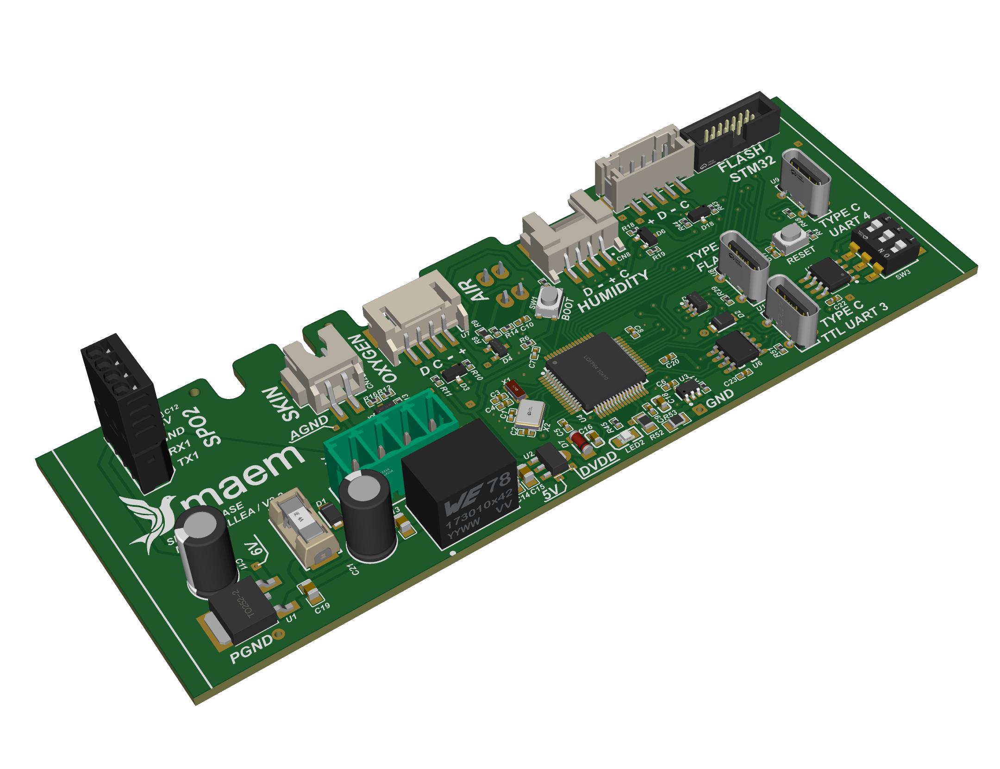
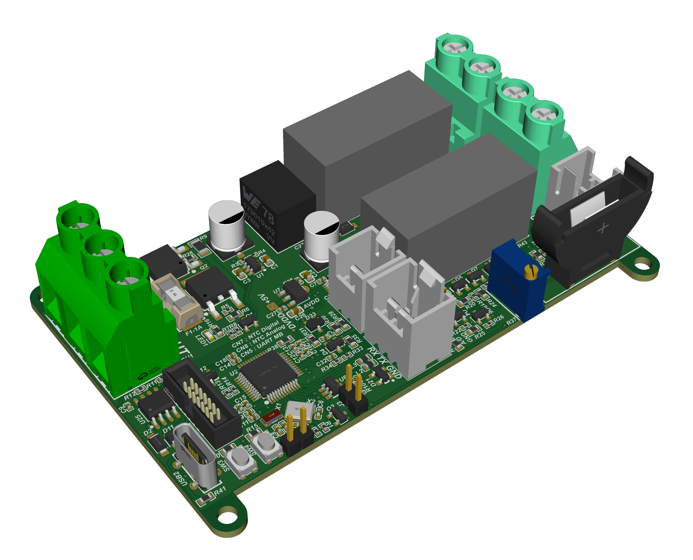
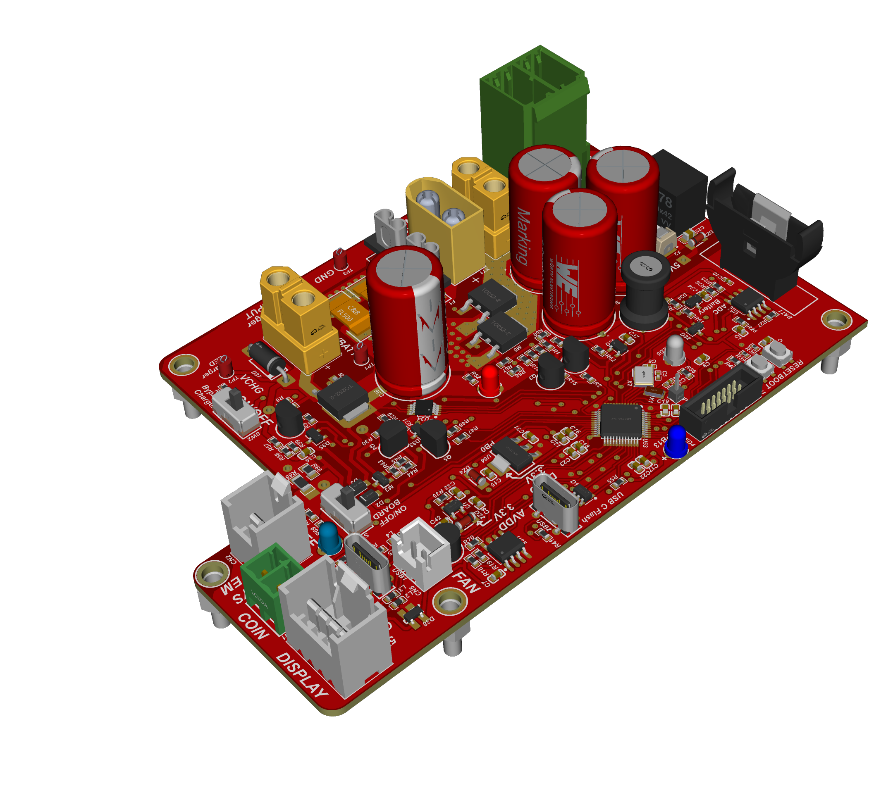
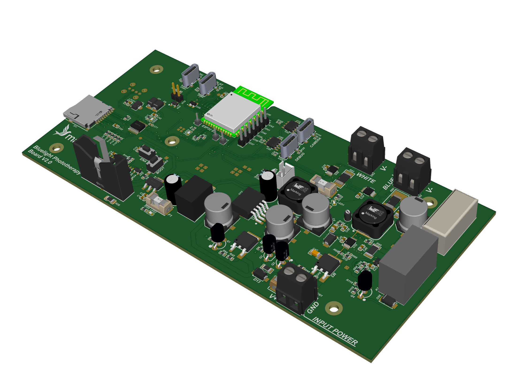

Mainboard
Six schematic sheets, 293 placements
A machine is rarely one circuit board. Each product below lists the boards it is actually built from, and most of them open in a 3D viewer where you can rotate the board and look at the real component placement. Schematics, Gerber data and bills of materials are not published, as that material belongs to the companies I designed them for.
A mainboard, a sensor board, and a separate safety board that can cut the heater without asking the controller first.


The mainboard came to me from an outside vendor with the entire circuit on a single schematic sheet: no current measurement, no thermocouple interface, no cut-off relays and no external watchdog. A device can run perfectly well without any of those. What it cannot do is prove that it is safe.
I rebuilt it across six sheets divided by function, with three-rail current monitoring, thermocouple front ends, three cut-off relays, an external watchdog and dedicated fuse holders, designed against IEC 60601-2-19 including a clause-by-clause map of where the earlier design did not comply with the thermal cut-out requirement. It is released for production and being prepared for clinical trial.
The third board exists because of that clause. A thermal cut-out has to work independently of any thermostat, which means it cannot live on the same controller it is protecting. It carries its own temperature cut-out and a low-voltage disconnect for the battery, and it is still in design.
One controller covering three product variants, the supply board that feeds it, and the two hand controls the surgeon actually touches.


The imported controller it replaced served only one of three product variants. The second variant needed an extra stepper driver board, and the two remote controls ran on two different designs of their own. One mainboard now covers all three variants and drives both remotes. Fewer boards means fewer connectors, and on equipment that moves and is cleaned constantly, cabled joints are the most common thing to fail.
Per-unit cost of a control set fell by roughly 70 % against buying the imported part, and the design reached mass production at 50 sets.
This is also the product that failed conducted emission at an accredited laboratory, by up to 8.5 dB and only while the machine was moving. Bonding the floating DC ground to the chassis cut the common-mode noise from 7.68 to 0.56 Vpp in the failing condition. A larger Y-capacitor measured 23.4 dB better at rest but did nothing while the machine moved, so it was rejected. On retest all four movement conditions passed, with 9.35 dB of margin in the worst case.
A mainboard that merges control and LED driver into one, the LED board that sits above the infant, and the adapter that carries the display.

What cures a jaundiced infant is not how bright the lamp looks but the irradiance reaching the skin, so the light has to be mapped rather than described. I measured 18 points across a 30 by 60 cm mattress area with a spectrometer, peak wavelength 456 nm, inside the bilirubin absorption band.
The spreadsheet behind the report divided the 430 to 490 nm band by a width of 30 nm instead of 60, which had doubled every figure in it. By the original numbers 15 of 18 points cleared the intensive threshold. Corrected, only three did. The raw file was left untouched, the correction was applied in analysis, and every output since carries a note explaining it. The corrected numbers made the product look worse, which is the only reason worth trusting them.
A patient button and a receiver, designed to drop into nurse call systems that are already installed.


Hospitals already own nurse call systems, and replacing one is expensive and disruptive, so almost nobody does it. The receiver has a dry-contact output galvanically isolated by PhotoMOS, which lets it work with any brand of master station without changing anything already on the wall. It runs on its own batteries, so fitting one does not mean pulling a new power cable through a ward that is in use. The chip antenna sits behind a matching network on swappable footprints, so tuning never forces a PCB respin.
Enabling the GPIO wake feature alongside an edge interrupt left the button drawing 18 mA instead of 0.4 mA, forty-five times worse, which only became visible because the current was measured rather than assumed. Average current came down from 0.90 to 0.60 mA and battery life rose from 46 to 69 days. The published figure is 63 days, because the longer numbers still needed a month of field validation.
Monitoring and remote cut-off for generator sets from 25 to 200 kVA, and the cellular add-on that gets the readings off site. Designed for PT Avenxor.

Three-phase four-wire at 400/230 V. One side of the board sits on the mains; the other is a battery-referenced microcontroller that a person can touch. An ATM90E36A metering front end is held in full galvanic isolation from an ESP32-S3 host, with 8 mm creepage for reinforced class at 400 V line to line. The cut-off relay is fail-safe: if control dies, the generator disconnects rather than stays on.
The voltage front end reads correctly with no calibration applied, because the divider was calculated properly from the start. Bench work also caught an accelerometer a supplier had shipped as a clone: the I²C address was right, but the identity register answered 0x11 instead of 0x44.
The add-on board carries an A7670E, which gives LTE Cat1 and GNSS on one module, a nano SIM and an antenna connector. It has no microcontroller of its own, on purpose: the meter already has an ESP32, so the host drives the modem over UART with AT commands rather than paying for a second processor to manage the first one.
Two details decided the design. The module's UART runs at 1.8 V referenced to its own regulator output while the host is 3.3 V, so a level shifter sits between them. And the transmit burst pulls about 2 A from a 3.4 to 4.2 V rail, which sets the regulator and the bulk capacitance. That 2 A came from the manufacturer's hardware design manual; the figure circulating online is 2.8 A and it is wrong.
I took this board on to teach myself cellular connectivity. Component selection is settled and the board is drawn. There is no firmware yet, and I would rather say so than imply otherwise.
Boards I made for myself. None of them ship to a customer; they exist so that firmware and measurement do not have to wait for product hardware.
An STM32G474RET6 carrier with every usable pin broken out twice: to a labelled header for jumper wires and to a screw terminal for anything that has to stay put while it is being measured. USB-C, a standard SWD header, NRST and BOOT buttons, and two regulators so the board can be fed from a bench supply or from USB.
The silkscreen carries the pin name next to every connection, which is the part that actually saves time. Probing the wrong pin is the cheapest mistake to make and one of the more expensive ones to find.
The two adapters do the same thing for the other end of the bench. The USB to TTL board breaks out DTR and RTS through the transistor pair that puts an ESP32 into its bootloader, so flashing does not mean holding a button down. The Modbus adapter puts a MAX3485 behind a CH340N with fuses and TVS diodes on the line side, because a bus that runs around a building eventually meets something it should not.
The viewer loads the real 3D model exported from the PCB design, with every component in the place it actually sits on the board.